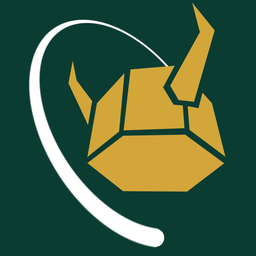
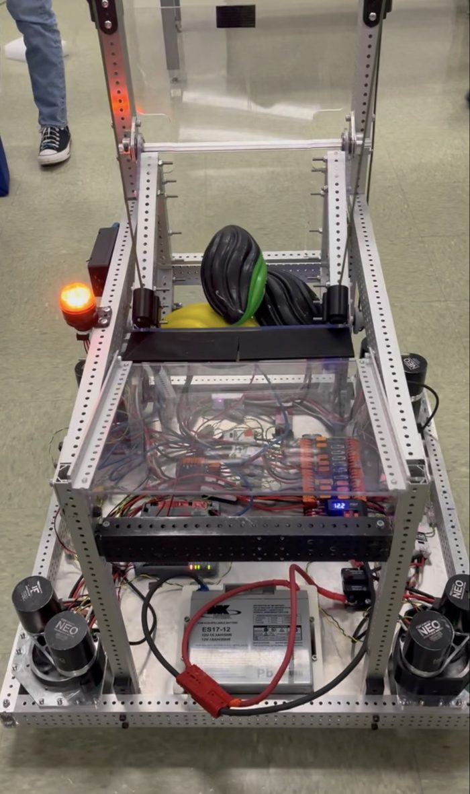
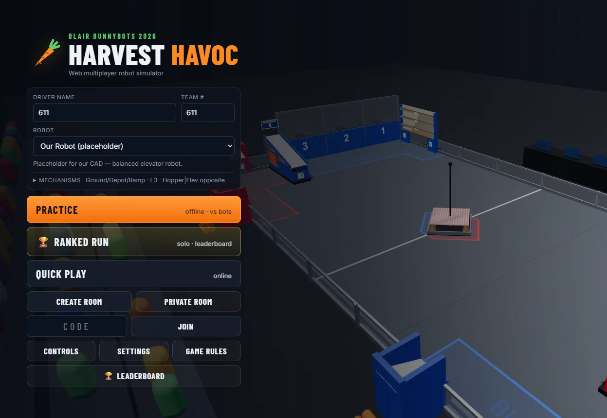
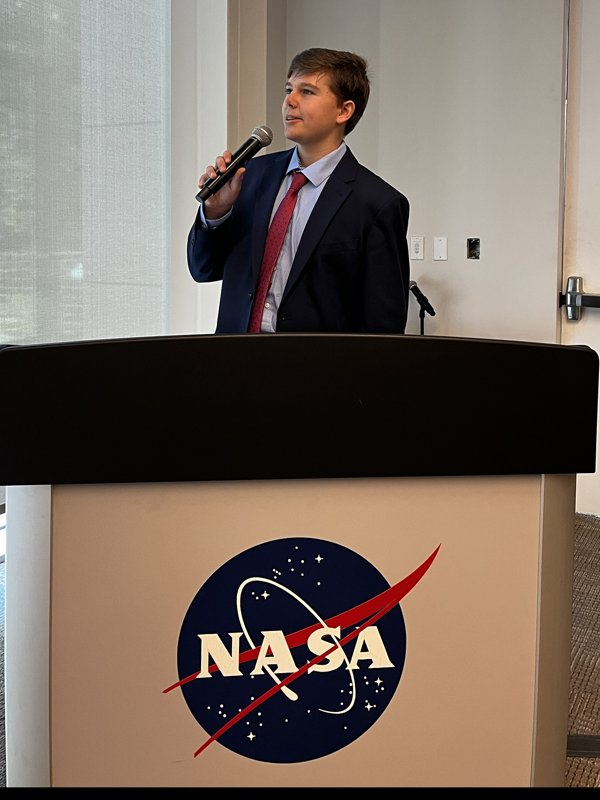
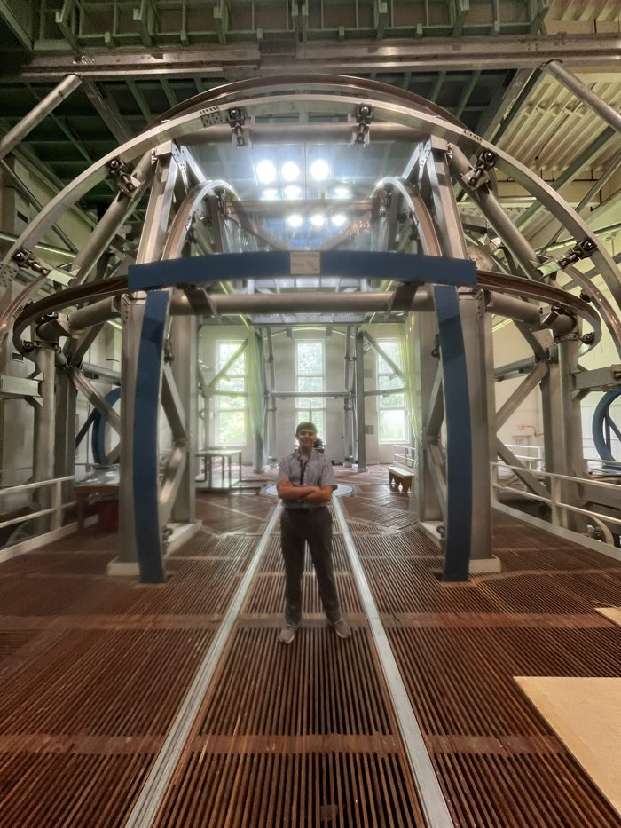
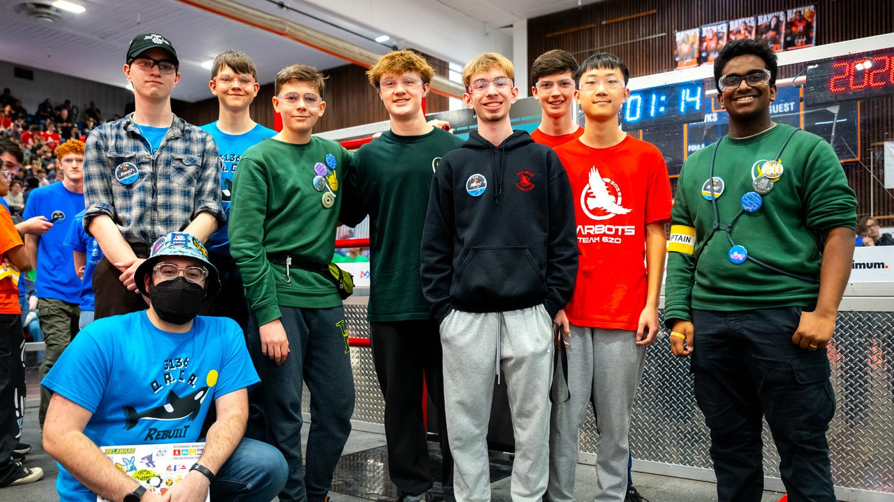

Robotics · CAD · Mechanical Engineering
Nicholas Noble designs and builds robots.
Aspiring mechanical / materials engineer. CAD & Fabrication Lead for Saxon Robotics (FRC 611) and NASA Goddard scholar intern.
Loading model…
- 0Community volunteer hours
- 0Students mentored
Featured Projects

Saxon Robotics
saxonrobotics.org ↗Saxon Robotics is Langley High School's FIRST Robotics program, with two teams: 526 (Saxon Sparks, the B team) and 611 (Saxons, the A team). I started on 526, where I co-led the mechanical and construction team, and am now CAD & Fabrication Lead on 611. The robots rotating at the top of this page are my CAD.
-
Nov – Dec 2025
Bunnybots 2025 · Team 526
My first build season. We designed, built and drove a robot for Blair Bunnybots, the off-season competition run by FRC Team 449.

-
Jan 2026
The first robot · Team 526
My first real experience taking a robot from an empty Onshape document to a full assembly. It took about 1 week to design and 2 weeks to fabricate. It is one of the robots rotating in the 3D viewer at the top.
-
Feb – Mar 2026
The main REBUILT season robot · Team 526
For the 2026 FRC game, REBUILT, we redesigned the robot from the ground up on the same timeline. We competed at 2 district events: FCH District Alexandria and FCH District Chesapeake.
- Alliance 8captain, FCH District Alexandria VA (Mar 6–8)
- 51 / 140FCH district ranking
We fell short of the District Championship.
FCH District Alexandria · Mar 6–8 FCH District Chesapeake · March -
Summer 2026
Rebuilt for WV ROCKS · Team 611
We didn't stop there. We rebuilt the robot and took it to WV ROCKS, a 26-hour, 14-minute endurance off-season competition, as Team 611. I was on the mechanical and pit crew and stayed through the night shift, keeping the robot running through a broken hopper, a bent shooter shaft and constant intake problems. This is the "Rebuilt robot" in the viewer at the top. The hopper walls are clear polycarbonate, so you can see the indexer inside.
- 16 / 30teams, in a field stacked with World Championship qualifiers
- 2playoff matches won
WV ROCKS · Summer 2026 -
Fall 2026 · now
Bunnybots 2026: Harvest Havoc · Team 611
Now on 611, our current build is for Blair Bunnybots 2026 (Dec 12, 2026). Robots haul carrots from their farm, stock shelves in their pantry, bake carrot cakes in the oven, and park at the dinner table in a 2:30 match (15 s autonomous plus 2:15 driver control).
Image 15 · Bunnybots robot / field -
Fall 2026
Strategy simulator
To decide what our Bunnybots robot should do before we built it, I made Harvest Havoc Sim: a browser-based, multiplayer 3D driving simulator of the game. It runs official field geometry and scoring, swerve driving, AI opponents, and configurable mechanisms (intakes, elevator heights, hopper layouts), so we can test strategies and builds before cutting metal.
Runs in your browser. Free hosting, so it can take up to a minute to wake up.

Past Projects

About Me
I'm a student at Langley High School in McLean, VA (GPA 3.963 weighted), and I want to be a mechanical / materials engineer. I've been designing and building machines since I was a kid, starting with LEGO Technic and moving on to competition robots and RL-trained autonomous systems.
I lead by building and by teaching. I mentor younger engineers, and my work helping rival teams at competitions earned the Gracious Professionalism award and laid the groundwork for Langley's second team, Saxon Sparks (526). I'm especially interested in additive manufacturing and machine learning as ways to make engineering faster and more efficient.
Fluent in English and Russian.
cad / cam
fabrication
code
honors
Experience
- Summer 2026
Paid Intern · National Space Club Scholars Program, NASA Goddard
Project CORTEx (Cross-sensor Onboard Reflex & Terrain Exploration), with a six-student team: 90.2% robot arrival rate vs 30.1% baseline, with a terrain classifier under 100 KB instead of about 150 MB. Built a simulation environment with physical robot models so reinforcement-learning algorithms for mobile robots could be developed faster and more realistically. Covered kinematic and dynamic analysis, autonomous path planning and control (Python, MATLAB, C++).

The code for this project is under an NDA with NASA, so it isn't public.
- 2026 · Present
CAD & Fabrication Lead · Saxon Robotics, FRC Team 611 (A team)
Lead CAD and fabrication for the A team. Rebuilt our REBUILT robot for WV ROCKS (16th of 30, 2 playoff match wins) and am leading the design and build of our Bunnybots 2026 robot.
- 2025 – 2026
Co-Leader, Mechanical & Construction · Saxon Robotics, FRC Team 526 (B team)
Led a mechanical and construction team of 10 underclassmen. Designed the 2026 FRC robot and managed its building and testing.
- 2025
Gracious Professionalism Award (2×) · FIRST Robotics
Helped opposing teams repair and tune their robots at competitions, earning the Gracious Professionalism award at both Regional and District events. That effort directly provided the base for Langley Robotics to start its B team, Saxon Sparks (526).

- 2025
Mentor · FIRST LEGO League
Coached 4th and 5th graders to a Core Values award. About 50 volunteer hours.
- Summer 2025
Student · NYU Automation, Robotics & Coding Program
Mechatronics course. Built an autonomous path-following, obstacle-avoiding vehicle.
- 2024
Adaptive Basketball Catapult · Middle School (8th grade)
Designed and built a catapult so a student with a disability could take part in basketball at school.
- 2023
Competitor · VEX Robotics
One season designing, building and driving a VEX competition robot.
- 2022 – 2023
Competitor · LEGO Battlebots
Designed and built combat robots from LEGO Technic for head-to-head matches.
Volunteering
- 100+ hours
Church & Community Volunteer · McLean, VA
Volunteer at my local church and at community events, helping with setup, running events and supporting the people who attend.
- ~50 hours
Mentor · FIRST LEGO League
Coached 4th and 5th graders in robot design and teamwork. The team won the Core Values award in 2025.
Let's build something.
Open to summer engineering programs, research internships and collaborations.